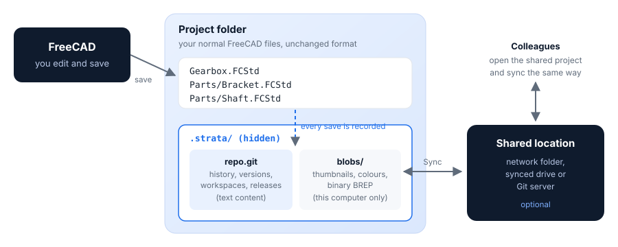

Key concepts
Strata uses a handful of ideas. Once you know them, every button in the panel makes sense.

Project
A project is a folder of FreeCAD documents that are versioned together: every .FCStd file in the folder and its sub-folders.
An assembly and the parts it links to therefore always match at every point in history.
Turning on version control creates a hidden .strata folder inside the project folder. It holds the history; your .FCStd files stay ordinary FreeCAD files.
Moving or copying the whole project folder, .strata included, keeps the history.
History
Every time you save a document in a project, Strata records a history entry with the date, your name, the documents that changed and a plain-language description of the change:
-
Edited Base plate: Length 10 mm → 12 mm
-
Added Bore · Added Sketch001
-
Renamed Base plate → Base plate (thin)
The description comes from comparing the FreeCAD model itself, feature by feature. FreeCAD’s internal bookkeeping is left out, so you only see what you changed.
Version
A version is a named, permanent snapshot of the whole project, for a milestone: V1 – Initial concept, V2 – Prototype sent to supplier.
Versions can be viewed, compared, restored, branched from and released. Names must be unique; Strata suggests the next Vn.
Workspace
A workspace is a separate line of work. Every project starts with the workspace Main. Create a workspace to try an alternative, for example a lighter bracket, without touching Main. Switching workspaces updates the documents on disk and reloads the open ones in FreeCAD. When the alternative is good, merge it into Main; if not, simply switch back and leave it.
Go back in time: view and restore
- View
-
opens a document as it was at any history entry or version, as a read-only copy labelled, for example, Bracket @ V1. Your project is not changed.
- Restore
-
brings the current workspace back to an earlier point, either the whole project or a single document. A restore is recorded as a new history entry, so the state you left stays in history.
Nothing is ever deleted by Strata’s normal operations. Documents that disappear during a restore or workspace switch are moved to .strata/trash.
Compare
Compare shows what changed between any two points: added, deleted and edited features with their old and new values, grouped by document. For a single document it can also overlay both states in 3D, the earlier one in translucent red and the later one in blue, and report the volume change.
Merge
Merging brings the changes of one workspace into another, document by document:
-
a document changed in only one of the two workspaces is taken over automatically;
-
a document changed in both asks you to choose Keep mine, Take theirs or Keep both. Keep both saves the other workspace’s copy next to yours as
Name (Workspace).FCStd.
Release
A release makes a version official, for example for manufacturing. Each released document gets a part number and a revision letter. Revision letters follow ASME Y14.35 practice: A, B, C, … skipping I, O, Q, S, X and Z, then AA, AB, …
A release can go straight to Released, or through an approval step: Pending, then Released or Rejected. A released revision that is no longer valid is marked Obsolete.
Sync
A project can be shared through a network folder, a synced drive (OneDrive, Nextcloud, Dropbox) or a Git server. Sync sends your workspaces, versions and releases there and fetches your colleagues'. Everything works offline; sync whenever the shared location is reachable.
The words you see, and what is underneath
For readers who know Git: Strata is a thin, careful layer over it.
| You see | Stored as | Notes |
|---|---|---|
Project |
bare repository in |
no working tree; your folder is the working copy |
History entry |
commit |
one per save that changed something |
Version |
annotated tag |
metadata as JSON in the tag message |
Workspace |
branch |
|
Restore |
new commit with an earlier tree |
history is never rewritten |
Merge |
merge commit, three-way per document |
|
Release, approval, rejection, obsolete |
tags |
immutable; the latest state wins |
Sync |
fetch and push of branches and tags |
See How history is stored for the details.